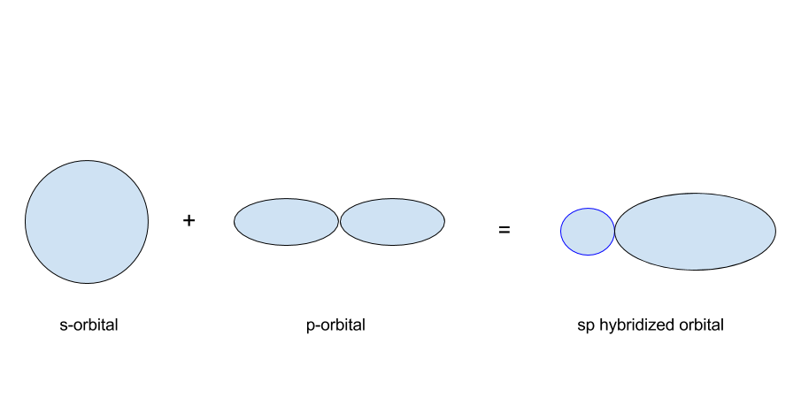
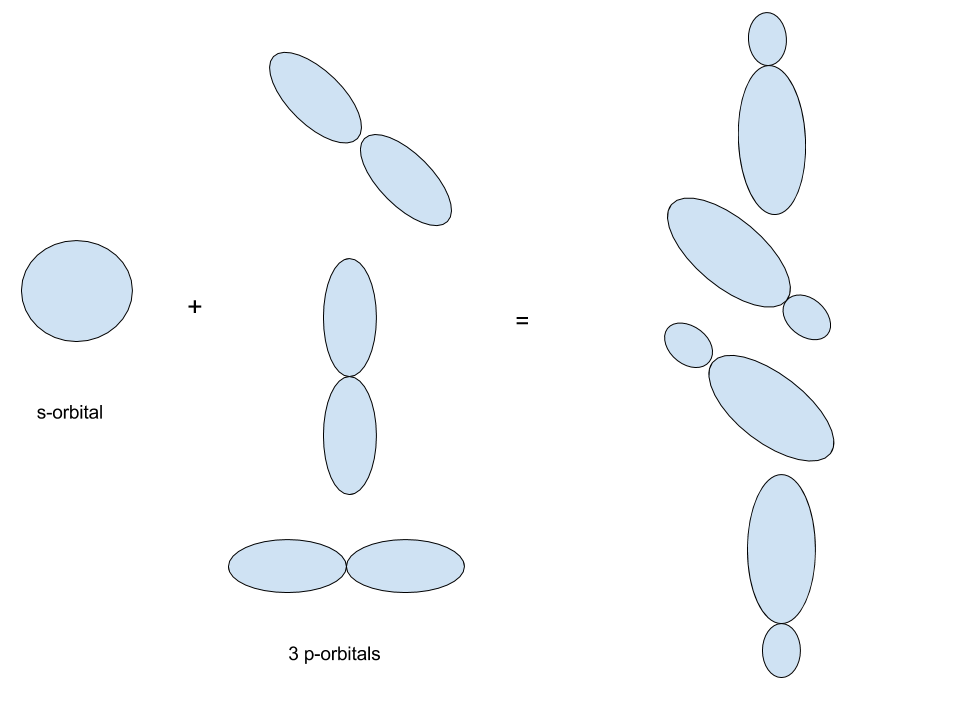
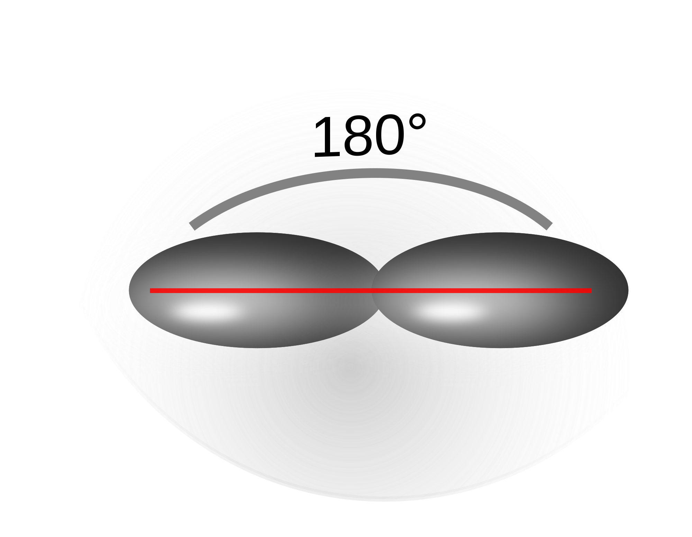
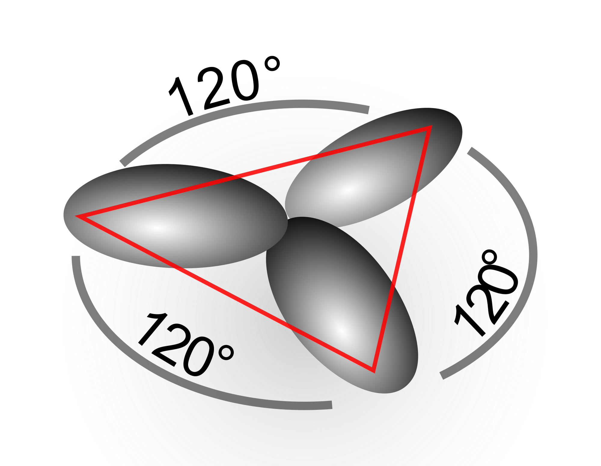
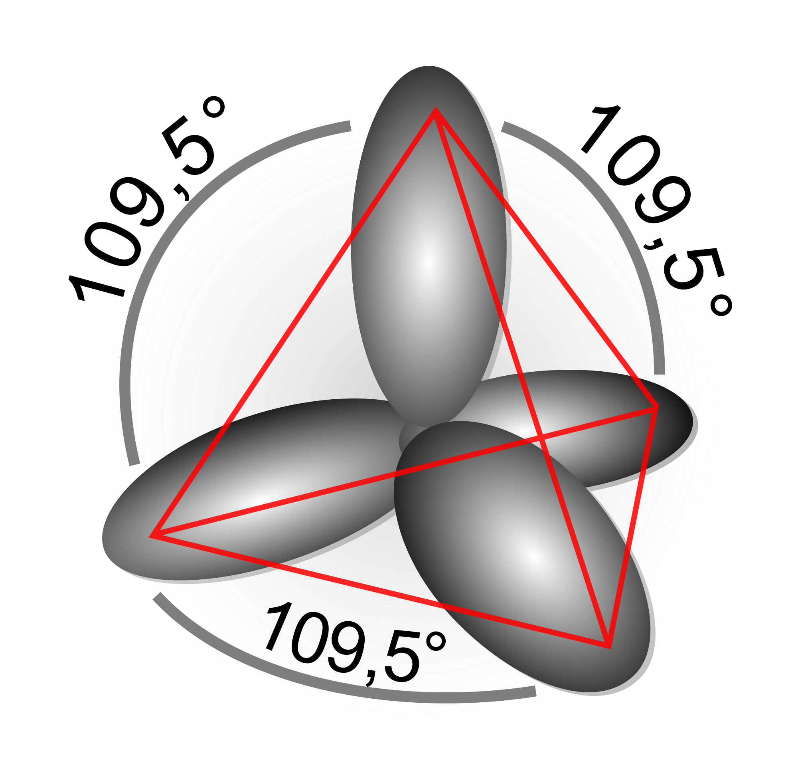

VSEPR and the other models of orbitals work well when considering the orbitals of an atom. How about the orbitals of bonded atoms?
The previous discussion on orbitals was on atomic orbitals. It turns out that when atoms bond together, the orbitals overlap and change slightly to form hybridized orbitals. Hybridization can be thought of as an extension to VSEPR.
To visualize what the difference between an atomic orbital and a hybridized orbital is, consider a single atom of carbon compared to a molecule of methane (`CH_4`). The differences between the two with regards to orbitals are:
the carbon molecule has 4 valence electrons in the valence orbital.
the methane molecule has the same carbon in the center, but now the valence orbital is interacting with the s-orbital of the `H` atoms.
So far, we've considered orbitals to be "static" regions but never addressed the possibility of different orbitals interacting. It turns out that by adding the `H` atoms to the `C` molecule, the orbitals or the valence orbitals of `H` will interact with the valence orbitals of C. The interaction between valence orbitals causes the orbitals to "mix", creating hybridized orbitals. In summary, we can say that:
The orbitals in an atom are different from the orbitals in a molecules.
For example, the mixing of an s-orbital and a p-orbital form a single `sp` hybridized orbital.
In this case, the mixing of an s-orbital and 3 p-orbitals forms 4 `sp^3` hybridized orbitals.
The number of hybridized orbitals is always equivalent to the number of atomic orbitals. If 4 atomic orbitals are mixed, the number of hybrid orbitals formed must be 4. You can think of it as a sort of "law of conservation of orbitals," where the number of orbitals that goes in must equal to the number of orbitals that comes out.
In this diagram, we see the energy levels of a hybridized carbon atom. On the left side, we see carbon in its atomic form with one 2s orbital and three 2p orbitals. Once the carbon bonds with, say, 4 hydrogen atoms, the valence orbitals of carbon become hybridized orbitals that are all indistinguishable.
The hybridization of the atomic orbitals of an atom depends on the number of "things" bonded to the atom. By things, we mean either lone pairs or bonds. This is the same metric used to determine the electron geometry of a molecule, which is why the two theories work well together.
Hybridized orbitals are denoted by writing the contribution of the orbital by its constituent atomic orbitals. For example, if a hybridized orbital is made up by a combination of 1 s-orbital and 1 p-orbital, the hybridized orbital is called a "`sp`" hybridized orbital. Likewise, if a hybridized orbital is given as a `d^2sp^3` orbital, we know that the hybridized orbital is composed of `2/6` d-orbital, `1/6` s-orbital, and `3/6` p-orbital.
`sp` hybridized orbitals exist when the central molecule has two things attached to it. An example is `BeF_2`:
`sp` orbitals have `1/2` s-character and `1/2` p-character.
Notice that the molecule has a linear geometry. The molecules around a `sp` hybridized atom will be in a linear configuration. This does not mean that the entire molecule will have a linear geometry, only the atoms bonded to the hybridized atom.
`sp^2` hybridized orbitals exist when the central molecule has 3 things attached to it. An example is `BF_3`.
`sp^2` orbitals have `1/3` s-character and `2/3` p-character.
`sp^2` hybridized orbitals correspond to a trigonal planar geometry around the central molecule. As with the `sp` orbital, this does not mean that the entire molecule will have a trigonal planar geometry, only the atoms bonded to the hybridized atom.
Hopefully you're noticing a pattern by now. The hybridization of the orbitals of an atom indicate the molecular geometry around the central atom itself, not the entire molecule.
`sp^3` orbitals have 3 things around the central atom. Methane, `CH_3`, is an example.
`sp^3` orbitals have `1/4` s-character and `3/4` p-character.
`sp^3` orbitals correspond to a tetrahedral geometry around the central atom.
The `dsp^3 and d^2sp^3` orbitals are formed when there are 4 or 5 things around the central atom respectively. The `dsp^3` orbitals usually correspond to a trigonal bipyramidal geometry. The `d^2sp^3` orbitals correspond to an octahedral geometry.
So far, hybridization seems like the same thing as VSEPR. Hybridization allows us to predict the geometry around a central atom given the lewis structure of the molecule.
This is the neurotransmitter serotonin. As you continue with chemistry, you'll encounter many molecules that do not fit the mold of VSEPR as VSEPR only describes relatively simple molecules. With VSEPR, how could we even categorize the molecular geometry of this molecule? With molecules like this, it's easier to isolate the different segments and analyze them independently. This is where hybridization comes in.
In most aspects, VSEPR and hybridization do the same thing. Hybridization will work in all cases that VSEPR does.
For example, the `N` atom near the lower center of the molecule is bonded to one H atom and has two separate bonds. According to valence bond theory, this `N` is `sp^2` hybridized and thus has a trigonal planar geometry.
Here's a table to summarize the geometries corresponding to the different hybridized orbitals. Hybridization can be used in all cases, whereas VSEPR can only be used for simple molecules. It is therefore necessary that you're able to see what the hybridization of an orbital is, and what geometry that corresponds to.
| Hybridization | Surrounding Groups | Geometry |
`sp` |
2 |
Linear |
`sp^2` |
3 |
Trigonal Planar |
`sp^3` |
4 |
Tetrahedral |
`dsp^3` |
5 |
TBP |
`d^2sp^3` |
6 |
Octahedral |
When atomic orbitals come together to bond, they form a new hybridized orbital that is a combination of the original orbitals.
The number of hybridized orbitals is equivalent to the number of atomic orbitals involved in the bonding.
The hybridization of an atom tells the geometry around that atom but not the entire molecule.
Hybridization can be used in essentially the same way that VSEPR can be used. Hybridization is a more flexible and widely applicable approach to determine the geometry however.